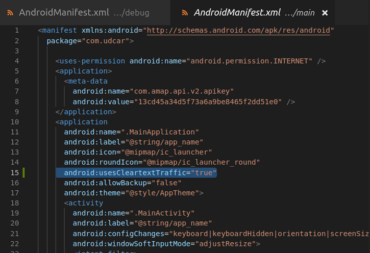

Android9.0以上版本闪退
打包好的android的apk在Android8.0的手机上运行正常；但是在Android9.0的手机上则出现闪退，无法访问网络的问题；是因为9.0系统已经默认限制了明文流量的网络请求，没有加密的http请求会被禁止掉。
解决方案
在android/app/src/main的AndroidManifest.xml中的这个地方加上即可正常访问网络：
android:usesCleartextTraffic="true"

博客地址：smileyqp's Blog